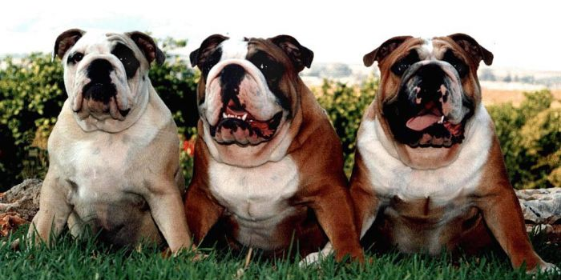
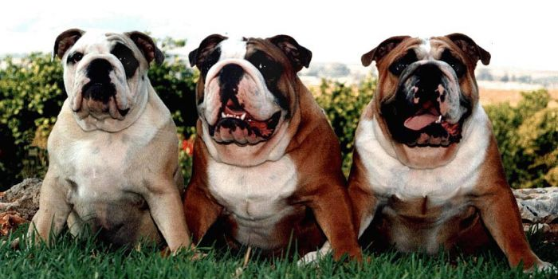

Английский бульдоги — обладает ярко выраженной индивидуальностью и считается национальной собакой Англии, воплощая черты, часто приписываемые «истинному джентльмену»" data-transition="slideInLeft" />
Английский бульдоги — обладает ярко выраженной индивидуальностью и считается национальной собакой Англии, воплощая черты, часто приписываемые «истинному джентльмену»" data-transition="slideInLeft" />

Получение здорового и высококачественного по породным характеристикам приплода невозможно без вскармливания щенков в первые дни жизни полноценным молоком. У кормящих собак молоко вследствие различных причин застаивается в молочной железе, раздражает ее ткани, что способствует возникновению мастита. У них повышается внутритканевое давление, нарушаются циркуляция крови, лимфы и питание тканей молочной железы, усиливается проницаемость кровеносных сосудов, происходит выпот белков -глобулинов и фибриногена, а также форменных элементов крови, и, как следствие, возникает воспалительная инфильтрация, определяющая форму мастита.
При обследовании 128 сук поражения паховых пакетов молочных желез выявили у 58, брюшных - у 38, грудных - у 32. На протяжении периода лечения вели клинические наблюдения за больными животными и проводили лабораторные исследования.
Наиболее часто у собак диагностировали мастит каудальных долей железы. Основными причинами их воспаления у 42 сук были травмы молочных желез, у 38 - ложная щен-ность, у 26 - неправильный отъем щенков от матери, у 22 - другая этиология. Это объясняется тем, что паховые и брюшные пакеты молочных желез у сук наиболее развиты и секретируют большее количество молока.
Из всего комплекса причин, вызывающих мастит, наибольшего внимания заслуживает микробный фактор. В настоящее время известно более 100 видов возбудителей, выделенных из секрета молочной железы животных и человека, больных маститом.
В процессе работы исследовали 224 пробы молока (секрета) от 68 собак. В 219 пробах (98 %) выделили микрофлору, состав которой был разнородным по видам микроорганизмов. В 23,7 % образцов выделили Staph. aureus, в 2,7 - Staph. epidermidis, в 32,0 - Str. agalactiae, в 14,1 - Str. pyogenes, в 4,1 - Proteus vulgaris, в 16,5 - E. coli, в 6,9 % -другие виды.
Наибольшую чувствительность микрофлоры выявили к энроксилу (91,3 %), гентамицину (75,9 %), стрептомицину (73,8 %), наименьшую - к пенициллину (42,1 %).
Устранение причин возникновения мастита редко ведет к выздоровлению животного. Поэтому наряду с этиотропной необходимо применять патогенетическую терапию, наиболее распространенным методом которой является новокаиновая блокада. Нами разработан и предложен способ лечения собак при мастите. Животное фиксируют в лежачем положении (горизонтальном или вертикальном), место инъекции обрабатывают в соответствии с общепринятыми в хирургии правилами асептики и антисептики. Иглу толщиной 0,5 - 0,8 мм и длиной 40 - 60 мм вводят между 3-м и 4-м поясничными позвонками ближе к краю 3-го позвонка на расстоянии 15 - 40 мм от средней линии туловища животного под углом к медианной плоскости 25 - 35°. После прокола кожи ее вводят вглубь на 20 -30 мм, затем угол наклона увеличивают до 40 - 50° и продвигают ее до упора в тело позвонка. Затем иглу оттягивают на 2 - 3 мм назад, убеждаются, что она находится вне сосуда, присоединяют шприц и вводят раствор новокаина.
При поражении левого или правого пакетов молочной железы раствор новокаина инъецируют описанным выше способом с соответствующей стороны животного.
Диапазоны величин, характеризующих точку вкола иглы и технику ее введения, были выбраны с учетом анатомических особенностей плотоядных различных видов и пород. Конкретные значения указанных параметров определяли с учетом массы тела, размеров, возраста и породы животного.
В ходе клинических исследований установили, что для плотоядных с массой тела до 20 кг оптимальным было введение 0,5 - 1,0%-ного раствора новокаина в дозе 0,5 - 1,0 мл/кг, выше 20 кг - 0,25 - 0,5 мл/кг массы тела.
Для усиления терапевтического эффекта новокаин можно вводить в сочетании с антибиотиком, подтитрованным к конкретному возбудителю.
Поскольку инъекция проводится вдали от очагов поражения исключается опасность распространения инфекции при острогнойных воспалительных инфекциях. Паралюмбальная блокада с применением 2%-ного раствора новокаина показана при лечении собак с острой и подострой формами мастита, а также при операциях на каудальных долях молочной железы. После проведения блокады в течение нескольких дней отмечают уменьшение секреции молока. Лучшие результаты получают при сочетании блокады с симптоматическим лечением. В случае необходимости новокаиновую блокаду проводят повторно через 3-4 дня.
Как показала клиническая практика, при проведении проводниковой новокаиновой блокады предлагаемым способом достигается устойчивый терапевтический эффект.
Одним из физиотерапевтических методов, испытанных нами при лечении собак, была виброакустическая терапия с применением аппарата "Витафон". Лечебное воздействие аппарата обусловлено механическими колебаниями на ткани больного, при котором происходит избирательное возбуждение механорецепторов кожи и вегетативных нервов, а также сосудов и гладких мышц.
"Витафон" также обладает способностью увеличивать кровоток и лимфоток, что позволяет снять отёк и увеличить скорость регенеративного процесса.
С помощью аппарата "Витафон" лечили 32 собаки с различными формами мастита. Виброфоны устанавливали на пораженную область рядом друг с другом. Рекомендуемая схема лечения включала воздействие на ответственные отделы позвоночника и область почек в непосредственной близости от которых проходят нервы, участвующие в иннервации молочных желез. Длительность процедур составляла в среднем 15-20 мин. Лечение проводили утром и вечером.
При серозной и катаральной формах мастита выздоровление наступало на 3 - 4-й день, при гнойных и абсцедирующих маститах - на 5 - 6-й день после начала применения "Витафона".
Заключение. Эффективными методами в комплексном лечении мастита у собак являются паралюмбальная новокаиновая блокада и виброакустическая терапия.